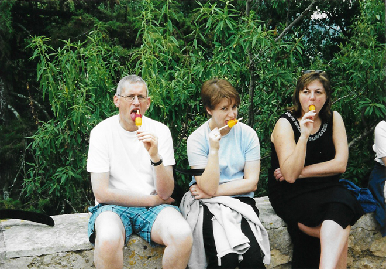
A group of six of us rented a villa in Pollença in Majorca and flew out to Palma where we collected a hire car. On our first afternoon we went into the local town to buy provisions (ie: crisps, wine and chocolate) and do a bit of exploring.
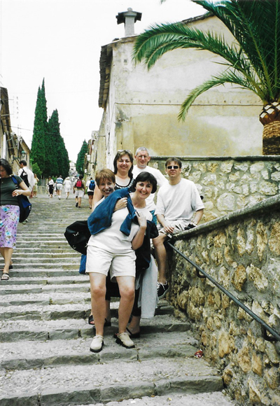
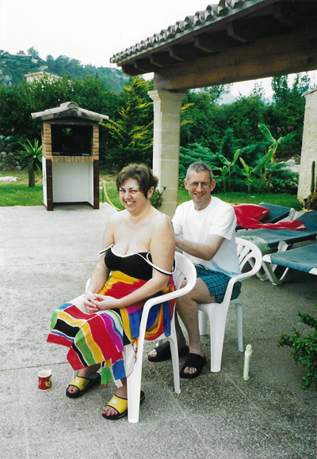
The villa was large and fairly comfortable and had a super pool area of which we made good use.
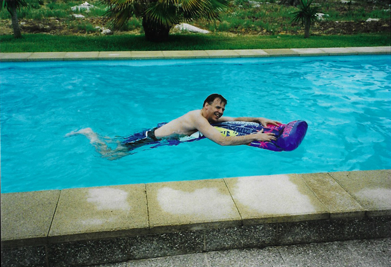
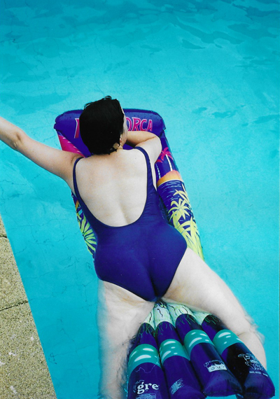
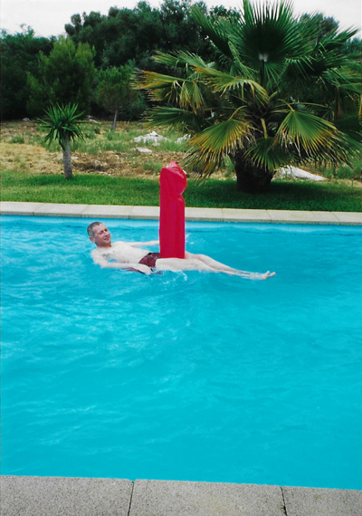
Some behaved more like children than others ...
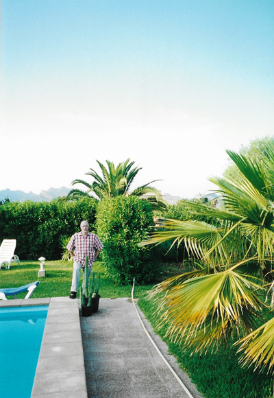
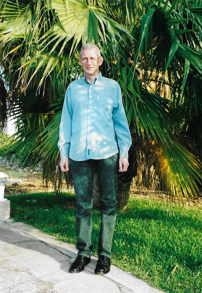
One day, Seán and I went off to explore the island on our own. Sitting on the top of a mountain overlooking the surrounding countryside off the road between Porto Colom and Felanitx, we discovered the Monastery of San Salvador.
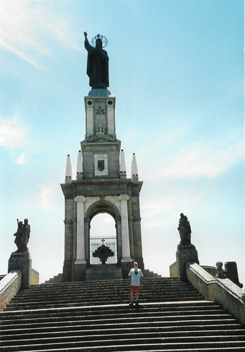
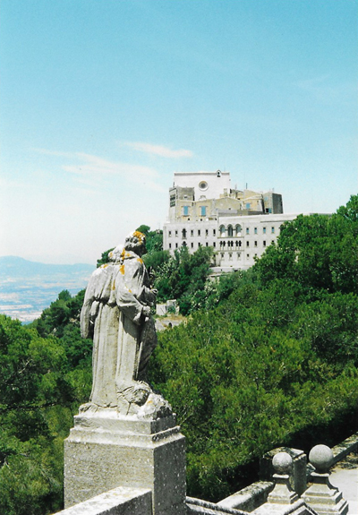
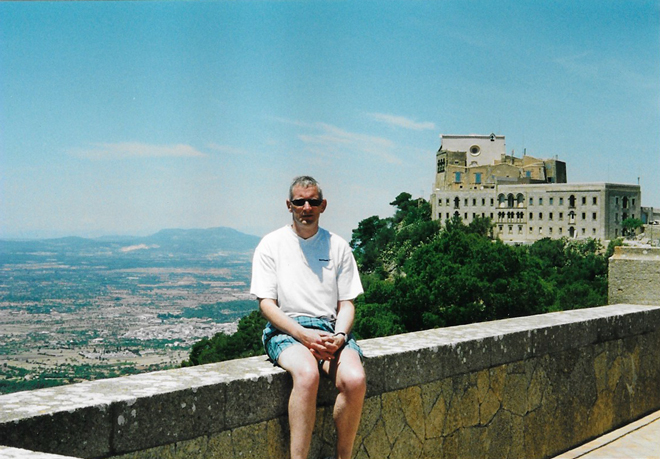
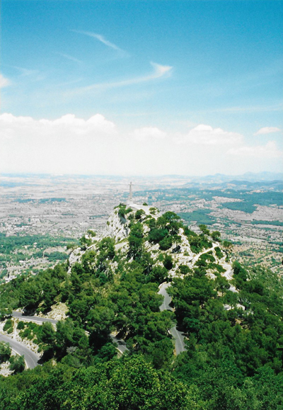
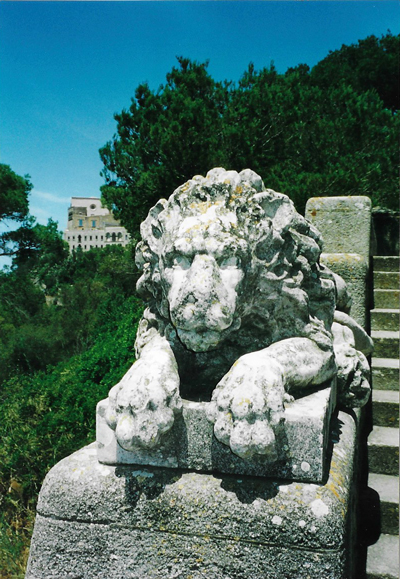
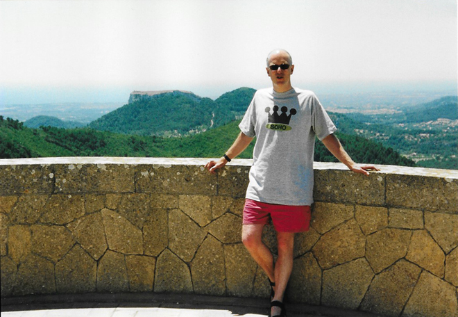
The views from the Monastery were truly stunning, and they also had a very welcome café where we enjoyed lunch with the best view of the holiday.
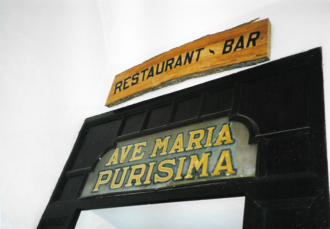
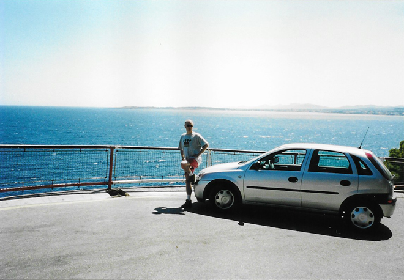
We continued driving after our lunch and came to the Caves of Drach (Coves del Drac - lit. 'Dragon caves') which are four great caves which extend to a depth of 25 m and are approximately 4 km in length.
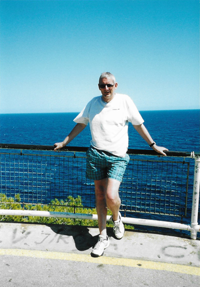
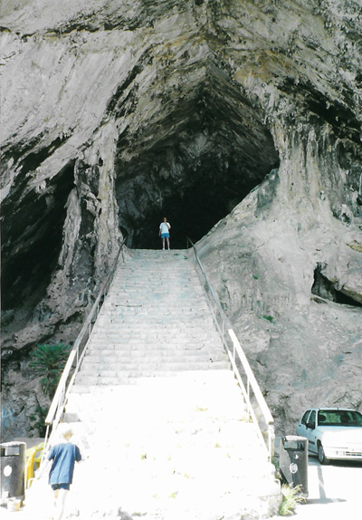
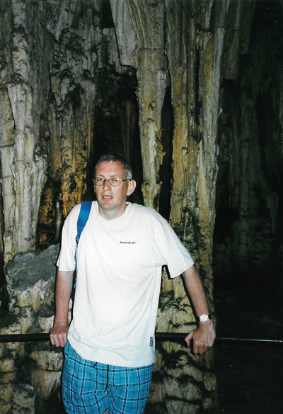
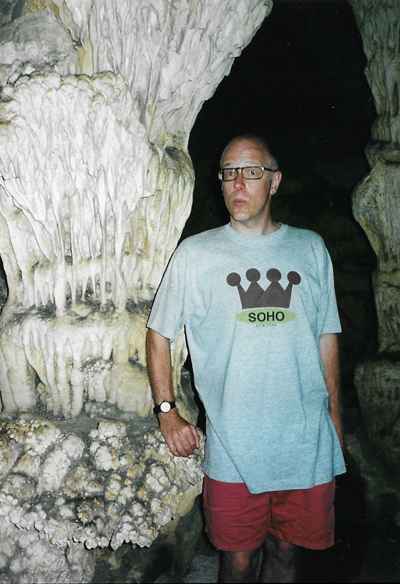
Pressing onwards, we came to the Santuari de Lluc - another monastery / sanctuary which was founded in the 13th century after a Moorish shepherd found a statue of the Virgin Mary on this site. Lluc is considered to be the most important pilgrimage site on Majorca. It is also known for its boys' choir, Els Blauets (a name derived from the blue cassocks worn by the boys), which was founded in 1531.
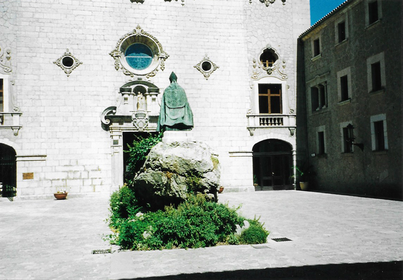
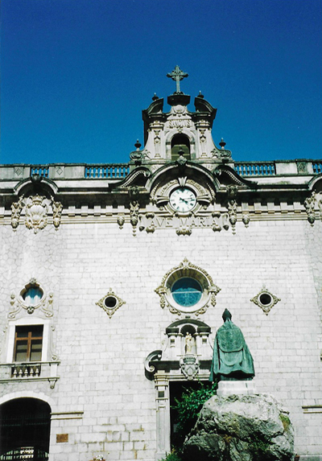
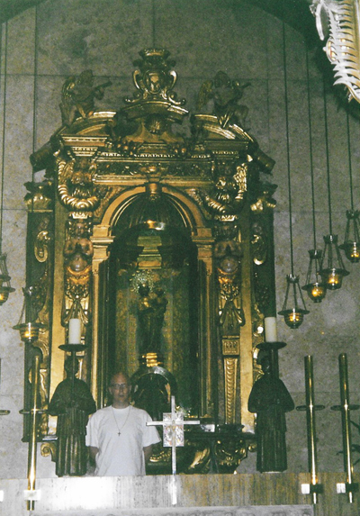
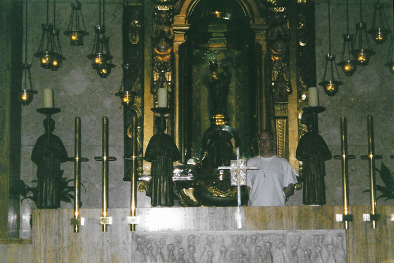
And, finally, we made it to Palma Cathedral - but the vergers were clearing the building as we arrived so we only had a couple of minutes to look around inside and therefore our photos are mostly of the exterior. Another visit clearly beckons ...
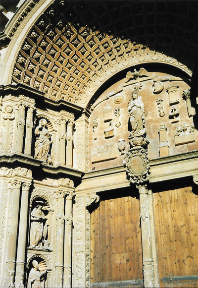
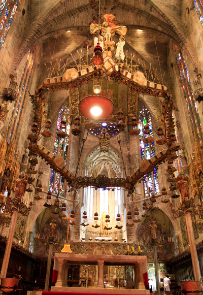
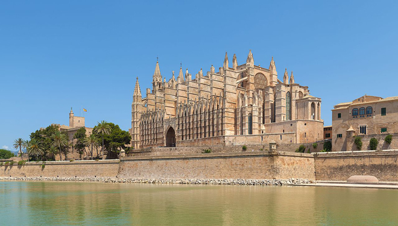
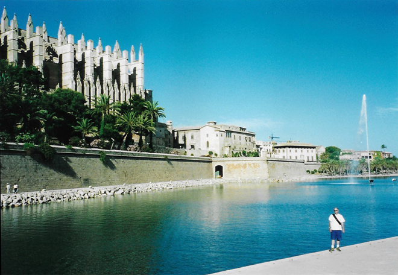
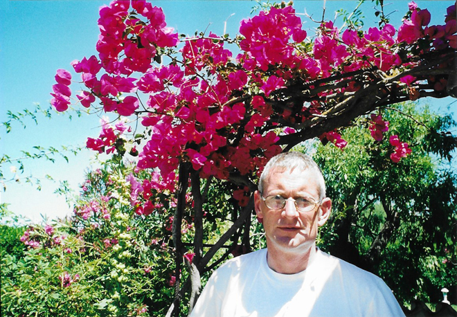